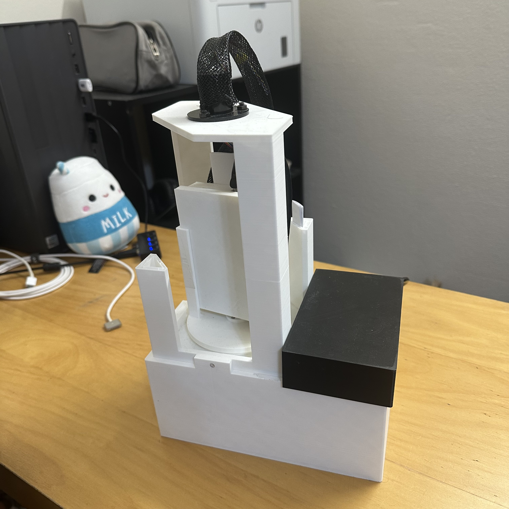
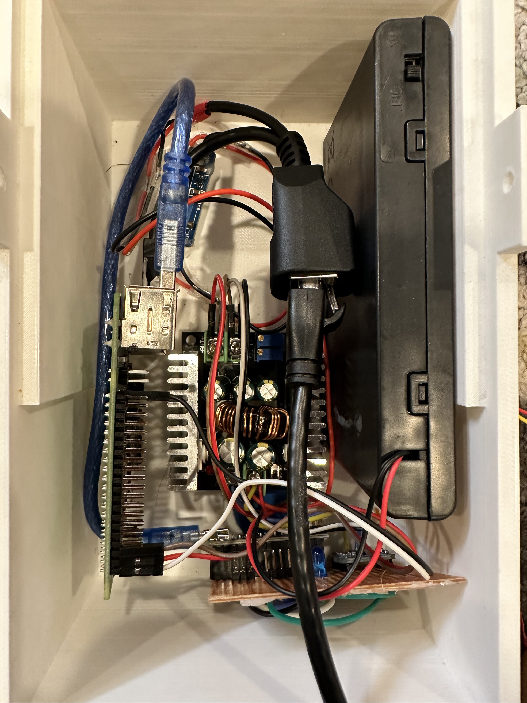
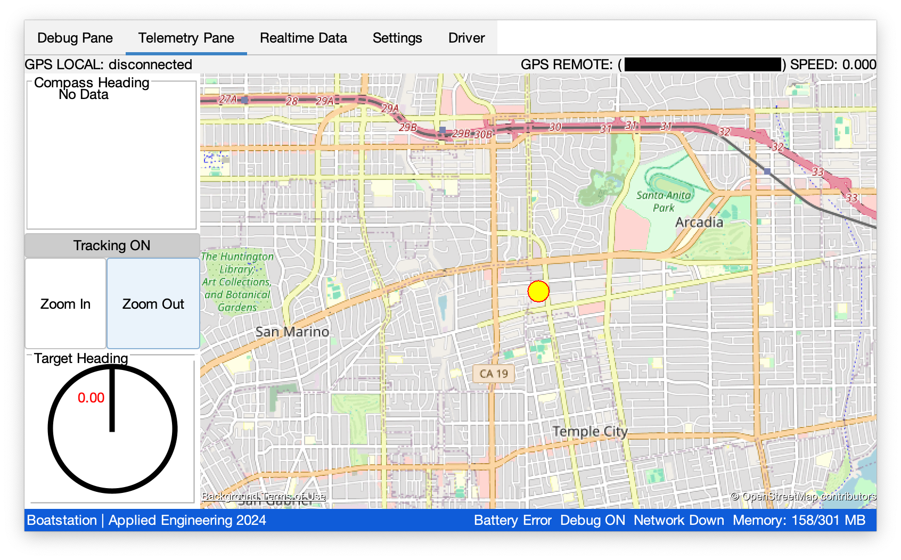
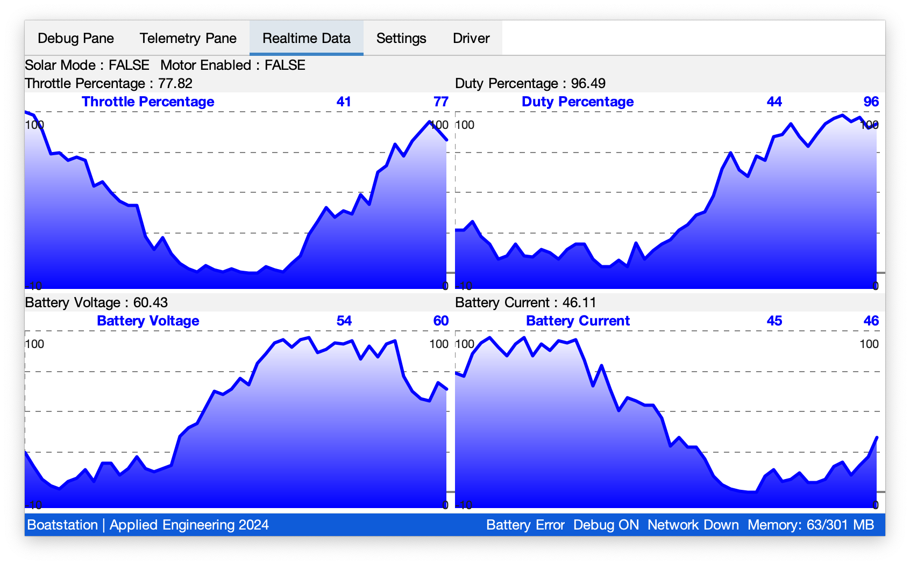
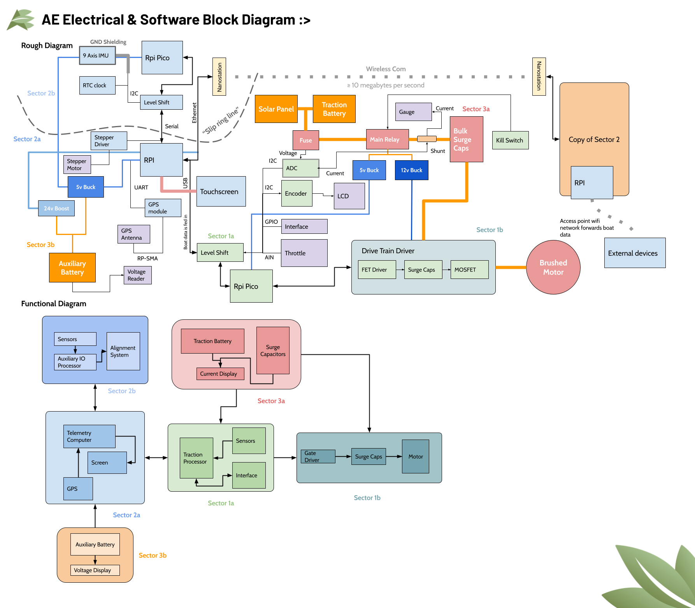

Boat Telemetry Network and Dashboard
A telemetry network with a range of 5 miles that facilitates communication from our solar boat to our team onshore. Powered by two Ubiquiti Nanostations configured in point-to-point mode. Each telemetry unit is equipped with a compass, gryo, GPS, and stepper motor that allows the uni-directional antennas to maintain connection as the boat moves through the water.
A Raspberry Pi 4 is used to run the telemetry software. This software provides the driver of the boat and the team live readings of speed, battery percent, current usage, etc. The location of the boat is also mapped by the onboard GPS. The Raspberry Pi is connected to an Arduino that controls the hardware and interfaces with sensors through I2C and Serial. For more robustness, extra effort was made to ensure all sensors are hot-pluggable.

